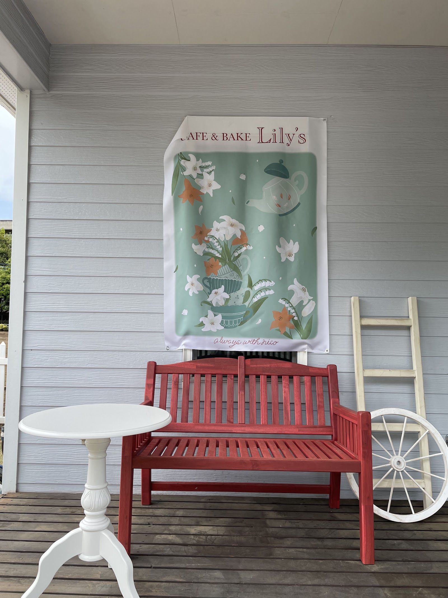
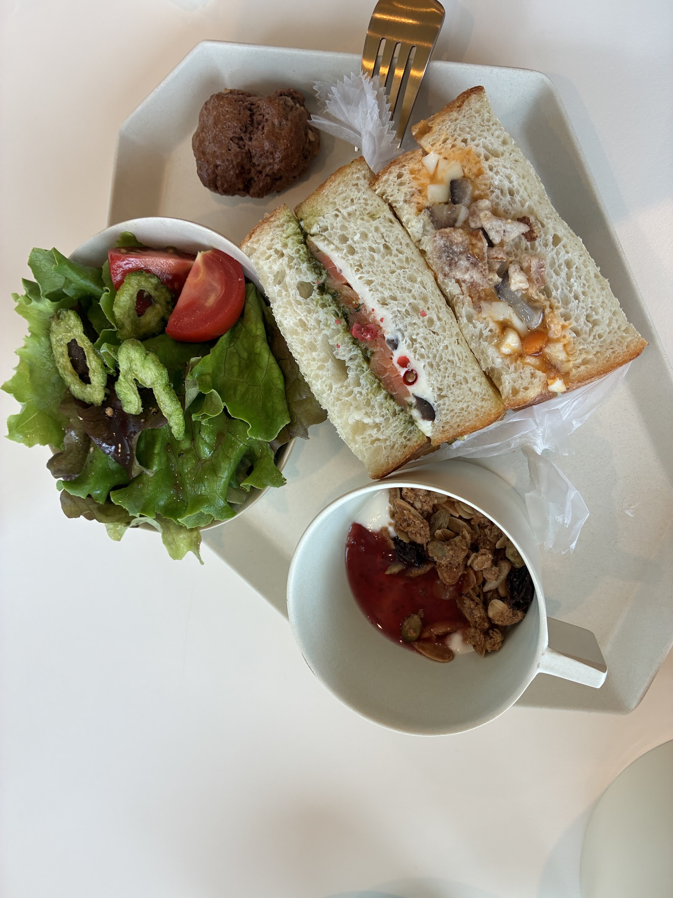
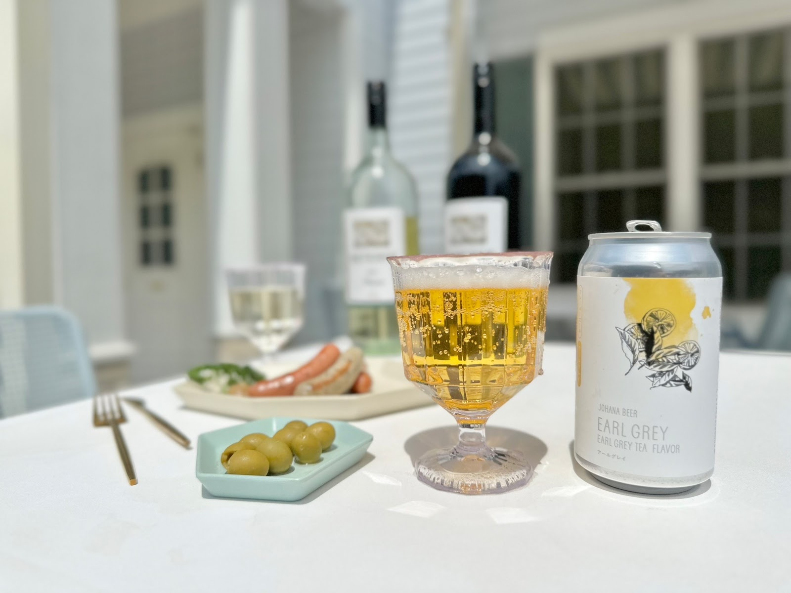
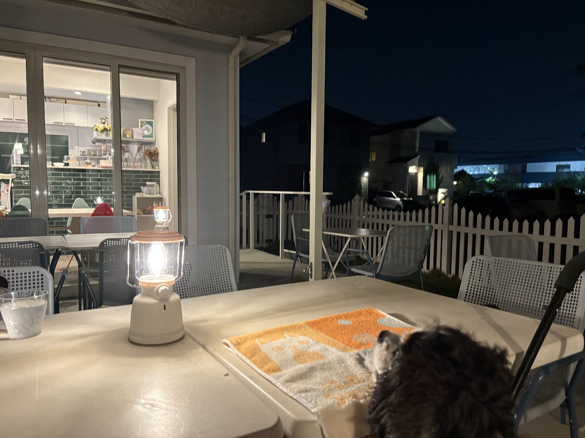
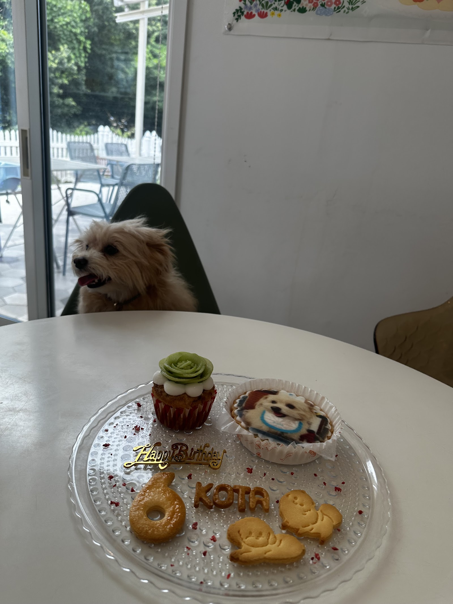

ワンちゃんと一緒に、散歩の途中でも立ち寄れる貴重なカフェです🍰☕️
地元の食材にこだわった美味しいサンドイッチやデザート、ワンちゃんも食べられるこだわりのメニューがたくさんあります。
ドッグランも利用可能です。
スタッフの方々のホスピタリティも素晴らしく、ずっと通っていきたいお店です。
CAFE&BAKE Lily's
always with nico
散歩の先に、庭とテラスとドッグランのある一軒家。
千葉県流山市の住宅街で、愛犬と暮らす毎日の続きを過ごせる場所です。

Photo: しおり
この店らしいところ
一軒家のカフェ
愛犬同伴OK(店内・テラス)
ドッグラン併設
流山産食材・紅茶へのこだわり
Lily'sの一日
朝から夜まで、庭とテラスは少しずつ表情を変えていきます。

朝は、静かな庭を眺めながらゆっくりと。

昼は、愛犬と一緒にテラスの食卓を囲んで。

夜は、ランタンの灯りに包まれて。

ドッグラン併設のカフェです。森と畑の横にあるので非常に静かに過ごせます。
スタッフの方も気さくで丁寧な接客に好感が持てます。
食事はどれも美味しいのですが、男性には少し物足りないかも。
ワンちゃんファーストのお店ですので、店内も同伴OK！とにかく居心地の良いお店です。
スタッフのお姉さんたちが優しくて犬たちも大喜び！
おしゃれだしご飯もスイーツも美味しくて、一番通ってるお店です！
うちの犬は肉が一番好きなのですが、ここのミートローフは絶品のようで気が狂ったように食べてます🥩
お料理もケーキもとっても美味しい♡
いつもお友達と一緒に(・∀・)ﾉｼ
芝生のドッグランがあるので走りまわってます
お誕生日プレートもオーダーできます♡
店内は明るく居心地が良く、ついつい長居しちゃう
毎回ワンワン吠えちゃってるクゥですが、暖かく見守ってくれて感謝です❤️
今日はお友達のコタくんの6才のバースデー🎂
味も盛り付けもとてもGOOD👌でした✨
満足して自宅のように寛いでいます😅
会いにきてください
千葉県流山市西初石4丁目353-7。愛犬とのお散歩の途中に、ぜひ立ち寄ってください。
最新の営業情報はInstagramでご確認ください。
千葉県流山市西初石4丁目353-7